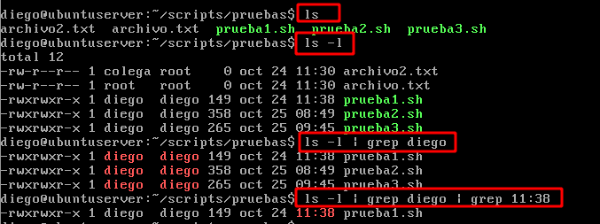

Una tubería ( pipe en ingles ) es una conexión entre varios comandos, de tal forma que la salida de uno de ellos se convierte en la entrada de otro. Esa entrada son los datos con los que va a trabajar el comando que los recibe. Podemos concatenar tantas tuberías y comandos como queramos.
Las tuberías son muy útiles cuando se necesita filtrar información. En el siguiente ejemplo se usa ls para mostrar datos y se continua especificando condiciones por medio de tuberías.
